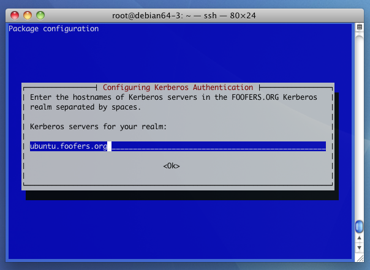
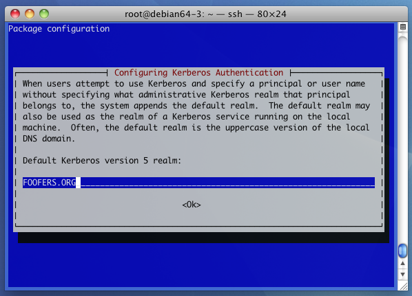
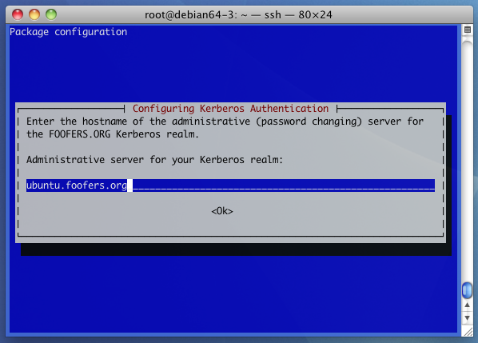

This guide is intended to help you get started with developing with Hbase.
Please note: this is intended to help you set up HBase on your own workstation for development, experimentation, education, etc. It's not for setting up a large-scale production ready HBase cluster. There is already a lot of good documentation for setting up production HBase clusters.
| master | slave | |
|---|---|---|
| HBase master | HBase regionserver | |
| HDFS namenode | Zookeeper | HDFS datanode |
| NFS server | NFS client | |
| Kerberos Ticket Server | Kerberos Admin Server | Kerberos client APIs |
| NTP server | NTP client APIs | |
| DNS server | DNS client APIs | |
This section takes its name from the similarly-named Linux distribution.
It is a good learning exercise to make your own Linux images. Create both "master" and "slave" images using the dependency lists for each shown in Dependencies.
Start with a recent Ubuntu such as ami-04aa5f6d.
HBase typically runs on large clusters of servers, but to get started developing, you really only need one linux server instance. The installed package base is fairly small. Below, I analyze the dependencies according to machine roles.
Unless you are doing development on Zookeeper, just run zookeeper on the same server instance used for the Master role.
The slave runs the regionserver.
apt-get install git-core)apt-get install default-jdk)apt-get install maven2)The master runs the Hbase server. Also, you might want to run Zookeeper there. Also if you want to develop with Kerberos, you might as well run the Kerberos Key KDC and Admin servers, too. On a real cluster, you'd run these separately, but this is to simplify things so that you can concentrate on HBase development.
The master role requires everything from the Slave role plus:
If you have a reliable connection to existing DNS and NTPd servers, you can skip ntpd and bind9. Personally I am sometimes traveling and I like to keep my VirtualBox cluster running when I'm disconnected from the Internet.
As stated above, to get started with Hbase development, you only really need to have one machine that functions in both slave and master roles, but keep in mind that real Hbase clusters will have one master and many slaves.
The above lists are only a small subset of what HBase
needs, but everything else will be pulled in when we run Maven
(see Compilation below), it will pull in all of the
remaining prerequisites and store them in
your ~/.m2 directory.
Note that ubuntu's default-jdk installs OpenJDK,
although Hbase officially recommends what people call the
"Sun
JDK", although now it's owned by Oracle.
I would like to do a more thorough analysis of the dependency graph in order to make the image and comprehensible as possible. It might be that you could start with a very small linux image, smaller than the default Debian server install.
Note however that Maven itself requires quite a lot in order to
install it. Here is the dependency graph
for maven2:
(
.png,
.dot).
You could install the Realm and Admin server on separate servers, but we'll just install them both on one for simplicity of explanation. Make sure your designated server has the related Kerberos server-related software installed (see Dependencies/Master role).
  Do this on all machines in your cluster that you will host your datanodes and regionservers.
Substitute your github username for myuser below:
[~]$ git clone http://github.com/myuser/hadoop-common git output [~]$ git clone http://github.com/myuser/hadoop-hdfs git output
This is required if you want to use Secure Hadoop and Secure HBase.
Check to make sure your HDFS installation is working:
[~/hadoop] $ bin/hadoop fs -lsr hdfs://namenode/ [~/hadoop] $ bin/hadoop fs -mkdir hdfs://namenode/foo ekoontz@ubuntu:~/hadoop$ bin/hadoop fs -lsr hdfs://namenode/ drwxr-xr-x - ekoontz supergroup 0 2010-09-14 20:11 /foo [~/hadoop] $ bin/hadoop dfsadmin -fs hdfs://namenode/ -report Configured Capacity: 23296315392 (21.7 GB) Present Capacity: 9946144768 (9.26 GB) DFS Remaining: 9946058752 (9.26 GB) DFS Used: 86016 (84 KB) DFS Used%: 0% Under replicated blocks: 0 Blocks with corrupt replicas: 0 Missing blocks: 0 ------------------------------------------------- Datanodes available: 3 (3 total, 0 dead) Name: 192.168.56.20:50010 Decommission Status : Normal Configured Capacity: 7765438464 (7.23 GB) DFS Used: 28672 (28 KB) Non DFS Used: 3714699264 (3.46 GB) DFS Remaining: 4050710528(3.77 GB) DFS Used%: 0% DFS Remaining%: 52.16% Last contact: Wed Sep 22 00:30:29 PDT 2010 Name: 192.168.56.30:50010 Decommission Status : Normal Configured Capacity: 7765438464 (7.23 GB) DFS Used: 28672 (28 KB) Non DFS Used: 2648248320 (2.47 GB) DFS Remaining: 5117161472(4.77 GB) DFS Used%: 0% DFS Remaining%: 65.9% Last contact: Wed Sep 22 00:30:28 PDT 2010 Name: 192.168.56.10:50010 Decommission Status : Normal Configured Capacity: 7765438464 (7.23 GB) DFS Used: 28672 (28 KB) Non DFS Used: 6987223040 (6.51 GB) DFS Remaining: 778186752(742.14 MB) DFS Used%: 0% DFS Remaining%: 10.02% Last contact: Wed Sep 22 00:30:28 PDT 2010
ekoontz@zookeeper:~$ git clone http://github.com/apache/zookeeper.git ekoontz@zookeeper:~$ cd zookeeper ekoontz@zookeeper:~$ ant jar ... jar: [jar] Building jar: /home/ekoontz/zookeeper/build/zookeeper-3.4.0.jar BUILD SUCCESSFUL Total time: 27 seconds ekoontz@zookeeper:~$
ekoontz@zookeeper:~$ emacs conf/zoo.cfg ekoontz@zookeeper:~/zookeeper$ cat conf/zoo.cfg tickTime=2000 initLimit=10 syncLimit=5 dataDir=/home/ekoontz/zk-data clientPort=2181 clientPortAddress=zookeeper
ekoontz@zookeeper:~/zookeeper$ bin/zkServer.sh start
ekoontz@ekoontz:~$ telnet zookeeper 2181
Trying 192.168.56.10...
Connected to ubuntu.foofers.org.
Escape character is '^]'.
ruok
imokConnection closed by foreign host.
ekoontz@ekoontz:~$
Substitute your github username for myuser below:
git clone http://github.com/myuser/hbase
CLASSPATH settingThis step allows you to control your Hadoop environment. For example, if you want to develop with Secure Hadoop, you'll want to explore the Hadoop/Kerberos communication, so you'll want to make sure that HBase is using the Hadoop that you're looking at in your Hadoop source directory (above)
Add the following to your bin/hbase:
if [ "$DEV_MODE" = "1" ] ; then
CLASSPATH=~/hadoop-common/build/classes:~/hadoop-hdfs/build/classes:$CLASSPATH
fi
Please see the following gist which shows configuration changes for both hbase-site.xml and hbase-env.sh.
Your development session with Hbase might look something like the following. Suppose you are working on developing a feature on the HBase Master's functionality.
HMaster:CreateTable(), you might start up a hbase shell and then do a create table.hbase/ directory in HDFS.
Use whatever editor you like but you should respect the Hbase coding conventions. Here are some links to documentation for various popular editors and how to configure them to respect these conventions.
In a shell, you can leave the following running while you work on your code:
while ( true ) do mvn compile && sleep 5 ; done
This ensures that you always have the latest code compiled and ready to run, and you'll notice compiler errors as you follow the output in one window, while editing your code in another window.
Note that we do only mvn compile: only the .classes are generated, not .jars.
bin/hbase master start
bin/hbase regionserver start
For development purposes, you only need one master and one
regionserver. Each of these should be run in a separate shell.
If you press control-C in one of these shells,
you'll send a terminate signal to the respective service,
which is good, so that you can easily stop and start the services.
In between debugging runs, you may want to reset your Hbase to clear any state left by your debugging session. Note that you'll confuse and probably terminate your Hbase master and regionserver if you do either of these while they are running.
This will wipe your HBase data directory (on HDFS) clean:
ekoontz@ubuntu:~/hadoop$ bin/hadoop fs -rmr hdfs://namenode/hbase
Where namenode is the hostname of your namenode.
ekoontz@ubuntu:~$ zookeeper/bin/zkCli.sh -server zookeeper rmr /hbase
Where zookeeper is the hostname of your
zookeeper.
I prefer Intellij IDEA rather than Eclipse, but would welcome someone writing an Eclipse guide and adding it here (using CC:attribute licence).
Intellij uses the Java debug machinery (enabled with):
-Xdebug -Xrunjdwp:transport=dt_socket,server=y,suspend=y,address=5006
to interactively debug Java processes running on remote machines. This is great because it lets you run your desktop operating system of choice (be it Mac OS X, Linux, or Windows) as your development environment, but still run your compiled runtime on Linux, which is required if you want to run HBase according to its official Recommendations.
Note, however, that you will not be able to compile within
Intellij: you must open a shell on the machine you want to run
HBase on, and run mvn compile there.
As you add new functionality to Hbase, be sure to add tests
to the src/tests directory, and to make sure
existing tests pass, using mvn test.
Let's say you've just added a new
class, org.apache.hadoop.hbase.ipc.foo. Your test
should probably go
in hbase/src/test/java/ipc/TestFoo.java. You'll
be iteratively running your test and want to only run that
test until it's ready to commit. To cause Maven to only run
your test, you would do:
[~/hbase] $ mvn -Dtest=TestFoo test
Running all unit tests takes a long time; therefore, you might want a fast, dedicated server, or on Amazon EC2 large (or better) instance.
Note that some of the solutions below wipe out all existing data in your HBase and or HDFS file system. Again, this guide is for development, not production, use of HBase, and your data should only be for testing purposes and stored separately if you care about preserving it.
If you attach to a running regionserver with your debugger, you might be stepping through the code for an extended amount of time. This will exceed a certain timeout (zookeeper lease(?)) and you'll make the master think you're dead.
When you try to continue, the regionserver will shut itself down. You may find that the master shuts down too (need to make sure about this). If this occurs you may find that starting the master, then starting the regionserver, causes the master to shut down. Then, you then start the master, which shuts the regionserver down. The way out of this deadlock is to reinitialize zookeeper:
[~/hbase] $ alias zkrm="~/zookeeper/bin/zkCli.sh -server zookeeper rmr /hbase" [~/hbase] $ zkrm
Operating system pauses can cause zookeeper session loss:
10/09/28 12:09:38 DEBUG ipc.HBaseServer: IPC Server handler 17 on 60000: has #1746 from 192.168.56.10:48114 10/09/28 12:09:38 DEBUG ipc.HBaseServer: Served: regionServerReport queueTime= 1 procesingTime= 1 10/09/28 12:09:38 DEBUG ipc.HBaseServer: IPC Server Responder: responding to #1746 from 192.168.56.10:48114 10/09/28 12:09:38 DEBUG ipc.HBaseServer: IPC Server Responder: responding to #1746 from 192.168.56.10:48114 Wrote 8 bytes. ... Guest OS is paused by Host OS ... ... Guest OS is resumed by Host OS ... 10/09/28 12:42:46 DEBUG ipc.HBaseServer: IPC Server listener on 60000: disconnecting client 192.168.56.10. Number of active connections: 1 10/09/28 12:42:46 WARN util.Sleeper: We slept 2045771ms instead of 60000ms, this is likely due to a long garbage collecting pause and it's usually bad, see http://wiki.apache.org/hadoop/Hbase/Troubleshooting#A9 10/09/28 12:42:46 INFO master.ServerManager: regionservers=1, averageload=3, deadservers=[ubuntu.foofers.org,60020,1285695293102] 10/09/28 12:42:46 WARN util.Sleeper: We slept 2045698ms instead of 60000ms, this is likely due to a long garbage collecting pause and it's usually bad, see http://wiki.apache.org/hadoop/Hbase/Troubleshooting#A9 10/09/28 12:42:46 WARN util.Sleeper: We slept 2283867ms instead of 300000ms, this is likely due to a long garbage collecting pause and it's usually bad, see http://wiki.apache.org/hadoop/Hbase/Troubleshooting#A9 10/09/28 12:42:46 DEBUG master.HMaster: Not running balancer because dead regionserver processing 10/09/28 12:42:46 WARN util.Sleeper: We slept 1987458ms instead of 1000ms, this is likely due to a long garbage collecting pause and it's usually bad, see http://wiki.apache.org/hadoop/Hbase/Troubleshooting#A9 10/09/28 12:42:46 DEBUG master.LoadBalancer: Skipping load balancing. servers=1 regions=3 average=3.0 mostloaded=3 leastloaded=3 10/09/28 12:42:46 WARN util.Sleeper: We slept 2015474ms instead of 30000ms, this is likely due to a long garbage collecting pause and it's usually bad, see http://wiki.apache.org/hadoop/Hbase/Troubleshooting#A9 10/09/28 12:42:47 INFO zookeeper.ClientCnxn: Unable to read additional data from server sessionid 0x12b59517df6000e, likely server has closed socket, closing socket connection and attempting reconnect 10/09/28 12:42:47 INFO zookeeper.ClientCnxn: Client session timed out, have not heard from server in 1988340ms for sessionid 0x12b59517df6000d, closing socket connection and attempting reconnect 10/09/28 12:42:47 INFO zookeeper.ZooKeeperWatcher: hconnection-0x12b59517df6000e Received Disconnected from ZooKeeper, ignoring 10/09/28 12:42:47 INFO zookeeper.ZooKeeperWatcher: master-0x12b59517df6000d Received Disconnected from ZooKeeper, ignoring 10/09/28 12:42:48 DEBUG ipc.HBaseServer: Server connection from 192.168.56.10:36272; # active connections: 1; # queued calls: 0 10/09/28 12:42:48 INFO zookeeper.ClientCnxn: Opening socket connection to server zookeeper.foofers.org/192.168.56.10:2181 10/09/28 12:42:48 INFO zookeeper.ClientCnxn: Socket connection established to zookeeper.foofers.org/192.168.56.10:2181, initiating session 10/09/28 12:42:48 DEBUG ipc.HBaseServer: got #1747 10/09/28 12:42:48 DEBUG ipc.HBaseServer: IPC Server handler 18 on 60000: has #1747 from 192.168.56.10:36272 10/09/28 12:42:48 DEBUG ipc.HBaseServer: Served: regionServerReport queueTime= 16 procesingTime= 0 10/09/28 12:42:48 DEBUG ipc.HBaseServer: IPC Server Responder: responding to #1747 from 192.168.56.10:36272 10/09/28 12:42:48 DEBUG ipc.HBaseServer: IPC Server Responder: responding to #1747 from 192.168.56.10:36272 Wrote 8 bytes. 10/09/28 12:42:48 INFO zookeeper.ClientCnxn: Opening socket connection to server zookeeper.foofers.org/192.168.56.10:2181 10/09/28 12:42:48 INFO zookeeper.ClientCnxn: Socket connection established to zookeeper.foofers.org/192.168.56.10:2181, initiating session 10/09/28 12:42:49 ERROR zookeeper.ZooKeeperWatcher: hconnection-0x12b59517df6000e Received Expired from ZooKeeper, aborting server 10/09/28 12:42:49 FATAL client.HConnectionManager$HConnectionImplementation: hconnection-0x12b59517df6000e Received Expired from ZooKeeper, aborting server 10/09/28 12:42:49 INFO zookeeper.ClientCnxn: Unable to reconnect to ZooKeeper service, session 0x12b59517df6000d has expired, closing socket connection 10/09/28 12:42:49 ERROR zookeeper.ZooKeeperWatcher: master-0x12b59517df6000d Received Expired from ZooKeeper, aborting server 10/09/28 12:42:49 FATAL master.HMaster: master-0x12b59517df6000d Received Expired from ZooKeeper, aborting server 10/09/28 12:42:49 INFO master.HMaster: Aborting 10/09/28 12:42:49 INFO zookeeper.ClientCnxn: Unable to reconnect to ZooKeeper service, session 0x12b59517df6000e has expired, closing socket connection 10/09/28 12:42:49 INFO master.HMaster: Stopping infoServer 10/09/28 12:42:49 INFO mortbay.log: Stopped SelectChannelConnector@0.0.0.0:60010 10/09/28 12:42:50 INFO ipc.HBaseServer: Stopping server on 60000 10/09/28 12:42:50 INFO ipc.HBaseServer: IPC Server handler 0 on 60000: exiting 10/09/28 12:42:50 INFO ipc.HBaseServer: IPC Server handler 1 on 60000: exiting 10/09/28 12:42:50 INFO ipc.HBaseServer: IPC Server handler 2 on 60000: exiting 10/09/28 12:42:50 INFO ipc.HBaseServer: IPC Server handler 3 on 60000: exiting 10/09/28 12:42:50 INFO ipc.HBaseServer: IPC Server handler 4 on 60000: exiting 10/09/28 12:42:50 INFO ipc.HBaseServer: IPC Server handler 5 on 60000: exiting 10/09/28 12:42:50 INFO ipc.HBaseServer: IPC Server handler 6 on 60000: exiting 10/09/28 12:42:50 INFO ipc.HBaseServer: IPC Server handler 7 on 60000: exiting 10/09/28 12:42:50 INFO ipc.HBaseServer: IPC Server handler 8 on 60000: exiting 10/09/28 12:42:50 INFO ipc.HBaseServer: IPC Server handler 9 on 60000: exiting 10/09/28 12:42:50 INFO ipc.HBaseServer: IPC Server handler 10 on 60000: exiting 10/09/28 12:42:50 INFO ipc.HBaseServer: IPC Server handler 11 on 60000: exiting 10/09/28 12:42:50 INFO ipc.HBaseServer: IPC Server handler 12 on 60000: exiting 10/09/28 12:42:50 INFO ipc.HBaseServer: IPC Server handler 13 on 60000: exiting 10/09/28 12:42:50 INFO ipc.HBaseServer: IPC Server handler 14 on 60000: exiting 10/09/28 12:42:50 INFO ipc.HBaseServer: IPC Server handler 15 on 60000: exiting 10/09/28 12:42:50 INFO ipc.HBaseServer: IPC Server handler 16 on 60000: exiting 10/09/28 12:42:50 INFO ipc.HBaseServer: IPC Server handler 17 on 60000: exiting 10/09/28 12:42:50 INFO ipc.HBaseServer: IPC Server handler 19 on 60000: exiting 10/09/28 12:42:50 INFO ipc.HBaseServer: Stopping IPC Server listener on 60000 10/09/28 12:42:50 INFO ipc.HBaseServer: IPC Server handler 24 on 60000: exiting 10/09/28 12:42:50 INFO ipc.HBaseServer: IPC Server handler 23 on 60000: exiting 10/09/28 12:42:50 INFO ipc.HBaseServer: IPC Server handler 20 on 60000: exiting 10/09/28 12:42:50 INFO ipc.HBaseServer: IPC Server handler 22 on 60000: exiting 10/09/28 12:42:50 INFO ipc.HBaseServer: IPC Server handler 21 on 60000: exiting 10/09/28 12:42:50 INFO ipc.HBaseServer: IPC Server handler 18 on 60000: exiting 10/09/28 12:42:50 DEBUG ipc.HBaseServer: Checking for old call responses. 10/09/28 12:42:50 INFO ipc.HBaseServer: Stopping IPC Server Responder 10/09/28 12:42:50 INFO master.HMaster$1: ubuntu.foofers.org:60000-balancerChore exiting 10/09/28 12:42:50 WARN zookeeper.ZKUtil: master-0x12b59517df6000d Unable to get data of znode /hbase/master org.apache.zookeeper.KeeperException$SessionExpiredException: KeeperErrorCode = Session expired for /hbase/master at org.apache.zookeeper.KeeperException.create(KeeperException.java:118) at org.apache.zookeeper.KeeperException.create(KeeperException.java:42) at org.apache.zookeeper.ZooKeeper.getData(ZooKeeper.java:921) at org.apache.hadoop.hbase.zookeeper.ZKUtil.getDataAndWatch(ZKUtil.java:492) at org.apache.hadoop.hbase.zookeeper.ZKUtil.getDataAsAddress(ZKUtil.java:565) at org.apache.hadoop.hbase.master.ActiveMasterManager.stop(ActiveMasterManager.java:179) at org.apache.hadoop.hbase.master.HMaster.run(HMaster.java:351) 10/09/28 12:42:50 ERROR zookeeper.ZooKeeperWatcher: master-0x12b59517df6000d Received unexpected KeeperException, re-throwing exception org.apache.zookeeper.KeeperException$SessionExpiredException: KeeperErrorCode = Session expired for /hbase/master at org.apache.zookeeper.KeeperException.create(KeeperException.java:118) at org.apache.zookeeper.KeeperException.create(KeeperException.java:42) at org.apache.zookeeper.ZooKeeper.getData(ZooKeeper.java:921) at org.apache.hadoop.hbase.zookeeper.ZKUtil.getDataAndWatch(ZKUtil.java:492) at org.apache.hadoop.hbase.zookeeper.ZKUtil.getDataAsAddress(ZKUtil.java:565) at org.apache.hadoop.hbase.master.ActiveMasterManager.stop(ActiveMasterManager.java:179) at org.apache.hadoop.hbase.master.HMaster.run(HMaster.java:351) 10/09/28 12:42:50 ERROR master.ActiveMasterManager: master-0x12b59517df6000d Error deleting our own master address node org.apache.zookeeper.KeeperException$SessionExpiredException: KeeperErrorCode = Session expired for /hbase/master at org.apache.zookeeper.KeeperException.create(KeeperException.java:118) at org.apache.zookeeper.KeeperException.create(KeeperException.java:42) at org.apache.zookeeper.ZooKeeper.getData(ZooKeeper.java:921) at org.apache.hadoop.hbase.zookeeper.ZKUtil.getDataAndWatch(ZKUtil.java:492) at org.apache.hadoop.hbase.zookeeper.ZKUtil.getDataAsAddress(ZKUtil.java:565) at org.apache.hadoop.hbase.master.ActiveMasterManager.stop(ActiveMasterManager.java:179) at org.apache.hadoop.hbase.master.HMaster.run(HMaster.java:351) 10/09/28 12:42:50 DEBUG client.HConnectionManager$HConnectionImplementation: Closed zookeeper sessionid=0x12b59517df6000e 10/09/28 12:42:50 INFO master.HMaster: HMaster main thread exiting ekoontz@ubuntu:~/hbase$
InconsistentFSStateException
This might happen if you shut down all of of your Hadoop
namenodes and datanodes, and then try to bring them up again by doing:
bin/hadoop namenode and bin/hadoop datanode.
Here's a screenshot showing output from such a situation:
rm -rf /tmp/hadoop-$USER
'Incompatible build' errors at startupbin/hadoop namenode -format, or,
if you want be more low-level, do the following (the "Solution on datanodes" section)
On datanodes: rm -rf /tmp/hadoop-$USER
This can happen if a datanode continues running while a namenode is rebooted. The datanode successfully reconnects when the namenode comes up, but the namenode doesn't recognize this datanode any more.
On the datanode, shutdown the datanode process and do: rm -rf /tmp/hadoop-$USER
Please see the gist above in the section Configuration settings which fixes this by setting hbase.zookeeper.quorum.
Please see the gist above in the section Configuration settings which fixes this by setting hbase.cluster.distributed to true.
| Title | Author | |
|---|---|---|
| Running Hadoop On Ubuntu Linux (Multi-Node Cluster) | Michael Noll | |
| Running Hadoop On Ubuntu Linux (Single-Node Cluster) | Michael Noll |
{kind=link}
{kind=link}